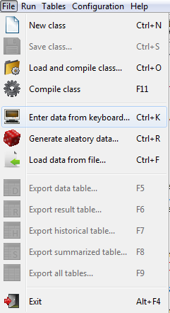

return
Load data
Enter data from keyboard
Select from the menu bar.

Then enter the data you want to use, and click "OK".
Generate aleatory data
Select from the menu bar.
Then enter the number of data to generate.
Then enter randomness intervals of data to generate. If no new values are entered, the
data is generated within the ranges by default.
To complete the data load press the "OK" button.
Load data from file
Select from the menu bar.
Then select the data file you want to use, and click the "Open" button.
Then, it displays a dialog with the number of imported data:
Note:
Data files are files .xml format of which is described in section Format files.
September 16, 2016